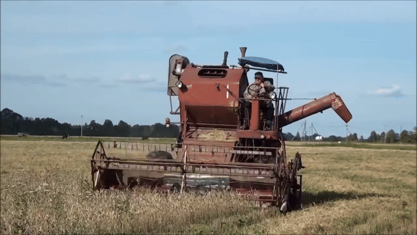

Комбайн-такси

Эта история случилась после сильного летнего ливня, который застал меня, пацана лет двенадцати, в центре Малыклы, куда я приехал на велосипеде за какой-то надобностью. Переждав в магазине довольно продолжительный дождь, я поехал обратно домой, неторопливо крутя педали по мокрому асфальту центральной улицы Малыклы, и угрюмо представлял, как буду колдыбаться на этом велике по ямбаковской грязи, которая будет налипать на велосипедные вилки, тормозить колеса и вынуждать меня постоянно останавливаться и счищать налипшие комья.
Мои мысли прервал неожиданный оклик — это был дядя Саша, брат моего дедушки. Он жил по соседству от нас. Все старшие в нашей семье его звали Санька́-бите́1. Он был немногословным, но добрым человеком с хорошим чувством юмора. Работал в колхозе трактористом, а в страду пересаживался на уборочный комбайн.
— Ты в Ямбаково? Хочешь, подвезу?
— На чем? — удивленно спросил я.
— На комбайне. — спокойно ответил дядя Саша, как будто ежедневно занимался на нем извозом. На самом деле, он в тот день просто перегонял комбайн на поля, которые находятся за Ямбаковым. И, естественно, с заездом на обед домой, поэтому мы оказались попутчиками.
— А велосипед куда? — спросил я.
Дядя Саша молча и ловко закинул велик на комбайн позади водительского сиденья, хотя я не успел еще дать согласия на поездку. Ну раз велик уже там, я решил что и мне будет предложено разместиться рядом с ним. Правда, закралось сомнение, можно ли ехать стоя. Ведь, ладно еще в Ямбакове, но в Малыкле легко можно попасться на глаза ГАИ. При этом каких-либо дополнительных сидений в конструкции комбайна модели СК-4 не предусмотрено — не такси же. Однако, идея стоять рядом с водительским сиденьем и смотреть, как управляют комбайном, меня захватила и я, отбросив сомненья, поднялся по лестнице и встал возле руля, типа «я готов, поехали». Но, как оказалось, у дяди Саши на этот счет был иной взгляд. И дело было даже не в ГАИ, скорее всего, а в том, что свалиться оттуда при движении комбайна — это раз плюнуть. Дядя Саша открыл крышку бункера для зерна, что находится справа от водителя и сказал: «Полезай». Мне стало жутко любопытно: неужели там есть секретное пассажирское кресло? Я заглянул внутрь — никакого кресла, конечно же, там не было, зато был огромный шнек поперек бункера. Как в мясорубке — подумал я и уточнил на всякий случай, не запустится ли случайно этот шнек во время поездки.
— Нет, — твердо сказал дядя Саша. — И спрячься там, не высовывайся.
Я залез в бункер и сел на корточки с поднятыми руками, которыми продолжал держаться за край люка, потому что держаться там больше не за что, кроме шнека. Но его конструкция не предполагала такое использование — слишком уж большие витки — ни схватить, ни обхватить. Поза моя, конечно, была не очень удобной для длительной поездки, но я утешал себя, что месить великом грязь было бы гораздо хуже. Комбайн завелся, зарычал и мы неспеша поехали.
Дорога была ровной, так что я даже расслабился и куда-то улетел мыслями. Очнулся я, когда меня хорошо так подбросило и не сильно, но чувствительно приложило к шнеку. Так я понял, что мы подъехали к Ямбакову и асфальт закончился.
Дальше расслабленно сидеть нельзя — подумал я и решил ехать стоя, выглядывая из люка. Бункер комбайна имеет скос книзу для выгрузки зерна, поэтому встать вертикально там не получилось и я в наклоне прилег грудью на край люка, о чем быстро пожалел — на следующей же яме меня подбросило и я опять ударился, но уже грудью о кромку люка, на которой лежал. Прямо засада какая-то: за спиной шнек, спереди кромка люка. Остается небольшое пространство между ними, в котором я и старался держаться весь оставшийся путь домой, напрягаясь что было сил в этаком упоре на полусогнутых руках, компенсируя ими все колебания комбайна вверх-вниз-влево-вправо в соответствии с ямбаковским дорожным рельефом, аки «лягушонка в коробчонке». Когда мы все-же добрались до дома, мышцы уже прилично, что называется, забились и я, чтобы не сорваться, выбирался из бункера очень медленно.
Во дворе нас встречала тетя Вера — жена дяди Саши, которую все звали Вера́-инге́2. Я надеялся впечатлить ее своим появлением из какого-то нутра комбайна, но она только поздоровалась, спросила, как дела, и никакого удивления не показала. Из чего я сделал вывод, что ездить во всякого рода бункерах вполне естественно для ямбаковских. Мне надо только физподготовку подтянуть, чтобы соответствовать.